A Web3-native security scanner: SAST, SCA, secrets and IaC — plus first-class auditing for TON, Solidity/EVM, Solana & CosmWasm. One CLI. No account. No telemetry. Nothing leaves your machine.

Everything below runs locally, free, with no account — a fast, practical scanner that catches the most common, highest-impact issues.
Native checks for TON (FunC/Tolk), Solidity/EVM, Solana/Anchor and CosmWasm — reentrancy, unchecked calls, missing sender validation, gas-drain and more.
Python, JS/TS, Go, Java, PHP, Ruby, C#, Kotlin, Rust, C/C++ — weak crypto, unsafe deserialization, TLS-off, eval/exec, command & SQL & XPath & LDAP injection. No network.
OSV.dev with EPSS exploit-probability ranking and an offline fallback. Optional cargo-audit for Rust when installed.
40+ secret patterns across 27 providers, plus Terraform / Kubernetes / CloudFormation misconfiguration checks.
SARIF 2.1.0 with CWE tags and severity scores for GitHub Code Scanning. A --baseline mode fails CI only on new findings.
Fully local. No sign-up, no phone-home, no telemetry. Ships as a Docker image too.
Point it at a folder and it streams findings from every engine, with a file:line and the engine that caught each one.

Not a rule engine dressed up. TythanAI explains findings, answers questions, and plugs into the agentic tools you already use — with a real safety boundary around anything active.
Grounded in an offline CWE knowledge base by default — accurate with zero model, zero network. Point it at a local Ollama model or Claude when you want deeper reasoning.
Ships as a local MCP server — scan_path, explain_finding, suggest_fix, list_rules — so your agent scans real code, not a guess.
Base64/hex/split-string-obfuscated payloads are decoded before pattern matching, and only flagged when the decoded content is genuinely dangerous. No new false positives.
Turns a finding into a real exploitability assessment — but only for owners with a recorded, unexpired authorization (signed permission or video statement) on file. Destructive or offensive actions are refused unconditionally, and every request is audit-logged.
The Community Edition is genuinely useful on its own. Teams and audit firms upgrade to Pro for depth, automation and support.
| Capability | Community · free | Pro · $39/dev/mo |
|---|---|---|
| Local CLI — SAST · SCA · Secrets · IaC · Web3 | ✓ | ✓ |
| Web3 rule packs (TON · Solidity · Solana · CosmWasm) | Core checks | Full set + deep analysis |
| AI assistant — explain · ask · chat | ✓ offline KB | ✓ + whole-repo triage |
| MCP server (Claude Code · Cursor · VS Code) | ✓ | ✓ + org-wide policy |
| Anti-evasion & authorized active validation | ✓ assessment only | ✓ + sandboxed DAST PoC |
| Auto-fix pull requests · CI/CD gates | — | ✓ |
| Dependency reachability analysis | — | ✓ |
| Inter-procedural CPG taint (Go · Java · Rust) | — | ✓ |
| Slack & Jira · SaaS dashboard | — | ✓ |
| Support | Community | Priority + SLA |
The built-in engine ships a labelled corpus so the numbers are reproducible from source: python -m benchmarks.measure. We publish our blind spots (SSRF, second-order SQL, open redirect) rather than hide them.
13 CWE classes the rule engine models, across 10 languages.
Including taint-only classes that belong to the Pro CPG engine.